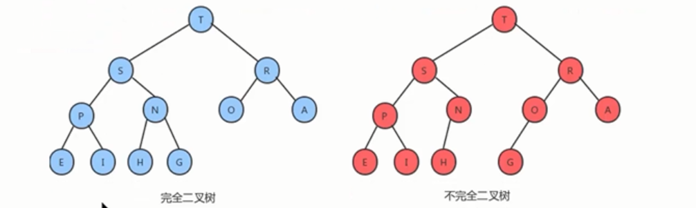

堆的特性：
1、它是完全二叉树，除了树的最后一层节点不需要是满的，其他的每一层从左到右都是满的，如果最后一层节点不是满的，那么要求左满右不满。

2、它通常用数组实现：
具体方法就是将二叉树的节点按照层级顺序放入到数组中，根节点在位置1，它的子节点在位置2和3，而子节点的子节点分别在位置4,5,6和7，以此类推。

如果一个节点的位置为k，则它的父节点位置为[k/2],而它的两个子节点的位置分别为2k和2k+1。这样在不使用指针的情况下，也可以通过计算数组的索引在树中上下移动：从a[k]向上一层，就令k等于k/2,向下一层就令k等于2k或者2k+1。
3、每个节点都大于等于它的两个子节点。注意堆中仅仅规定了每个节点大于等于它的两个子节点，但这两个子节点的顺序并没有做规定，和二叉查找树是有区别的。
堆的API设计
类名 | Heap<T extends Comparable<T>> |
构造方法 | Heap(int capacity):创建容量为Heap对象 |
成员方法 | private boolean less(int i,int j):判断堆中的索引i处的元素是否小于索引j处的元素 private void exch(int i,int j):交换堆中i索引和j索引处的值 public T delMax():删除堆中最大的元素，并返回这个最大元素 public void insert(T t):往堆中插入一个元素 private void swim(int k):使用上浮算法，使索引k处的元素能在堆中处于一个正确的位置 private void sink(int k)：使用下沉算法，使索引k处的元素能在堆中处于一个正确的位置 |
成员变量 | private T[] imtes：用来存储元素的数组 private int N:记录堆中元素的个数 |
堆的实现
堆的插入


public void insert(T t){
items[++N]=t;
swim(N);
}
private void swim(int k){
//通过循环，不断地比较当前节点的值和其父节点的值，如果发现父节点的值比当前节点的值小，则交换位置
while(k>1){
//比较当前节点和其父节点
if(less(k/2,k)){
exch(k,k/2);
}
k=k/2;
}
}
堆的删除：
由堆的特性可以得出，索引1处的元素就是根节点处的元素，当我们把根节点处的元素删除了之后，需要有一个新的根节点出现，这时我们可以暂时把堆中的最后一个元素放入到索引1处，充当根节点，然后在使整个堆有序。


代码：
//删除堆中最大的元素，并返回这个最大元素
public T delMax(){
T max=item[1];
//交换索引1处的元素和最大索引处的元素，让完全二叉树最右侧的元素变为临时根节点
exch(1,N);
//最大索引处的元素删除掉
items[N]=null;
//元素个数-1
N--;
//通过下沉调整堆，让堆重新有序
//sink(1);
return max;
}
private void sink(int k){
//通过循环不断地对比当前k节点和其左子节点2*k以及右子节点2*k+1的元素的大小，如果当前节点小，则需要交换位置，交换其和其字节节点中较大一个的位置。
while(2*k<=N){
//获取当前节点的子节点中的较大节点
int max;//记录较大索引的值
if(2*k+1<=N){
if(less(2*k,2*k+1)){
max=2K+1;
}else{
max=2K;
}
}else{
max=2K;
}
//比较当前节点和较大节点的值
if(less(k,max)){
exch(k,max);
k=max;
}else{
break;
}
}
}
堆排序：
给定一个数组：
String[]arr={"S","O","R","T","E","X","A","M","P","L","E"};
对数组内的元素进行排序：
API设计：
类名 | HeapSort<T extends Comparable<T>> |
成员方法 | public static void sort(Comparable[] source):对数组内的元素进行从小到大排序 private static void createHeap(Comparable[] source,Comparable[] heap):根据原数组构造出堆 private static boolean less(Comparable[]heap,int i,int j):判断heap堆中索引i处的元素是否小于索引j处的元素 private static void exch(Comparable[] heap,int i,int j)：交换heap堆中索引i处和索引j处的值 private static void sink(Comparable[]heap,int target,int range):在heap堆中，对target处的元素做下沉，范围是0-range |
实现步骤：
1、构造堆；
2、得到栈顶元素，这个值就是最大值；
3、交换栈顶元素和数组中的最后一个元素，此时所有元素中的最大元素已经放到合适的位置；
4、对堆进行调整，重新让除了最后一个元素的剩余元素中最大元素放到堆顶；
5、重复2-4步骤，直到堆中仅剩一个元素。
代码实现
public class HeapSort{
private static boolean less(Comparable[]heap,int i,int j){
return heap[i].CompareTo(heap[j]<0);
}
priavte static void exch(Comparable[] heap,int i,int j){
Comparable tmp=heap[i];
heap[i]=heap[j];
heap[j]=tmp;
}
private static void createHeap(Comparable[] source,Comparable[] heap){
//数组copy
System.arraycopy(source,0,heap,1,source.length);
for(int i=(heap.length/2);i>0;){
sink(heap,i,heap.length-1);
}
}
//range是下沉的范围
private static void sink(Comparable[] heap,int target,int range){
while(target*2<=range){
int max;
if(taraget*2+1<=range){
if(less(heap,2*target,2*target+1)){
max=2*target+1;
}else{
max=2*target;
}
}else{
max=2*target;
}
}
if(!less(heap,target,max)){
break;
}
exch(heap,max,target);
target =max;
}
public static void sort(Comparable[] source){
//构建堆
Comparable[] heap=new Comparable[source.length+1];
//定义一个变量，记录未排序的元素中最大索引
int N=heap.length-1;
//通过循环，交换1索引处的元素和排序的元素中最大索引
while(N!=1){
//交换元素
exch(heap,1,N);
//排序交换后最大元素所在的索引，让它不参与堆的下沉
N--;
//需要对索引1处的元素进行下沉调整
sink(heap,1,N);
}
//把heap中的数据复制到原数组中
System.arraycopy(heap,1,source,0,source.length);
}
}
堆构造过程：
堆的构造，最直观的想法就是另外再创建一个新数组，然后从左往右遍历原数组，每得到一个元素后，添加到新数组中，并通过上浮，对堆进行调整，最后新的数组就是一个堆。
更聪明的方式：
创建一个新数组，把原数组中的[0-length-1]元素拷贝到新数组中的1-length处，再从新数组长度的一半处开始往1索引处扫描（从右往左），然后对扫描到的每一个元素做下沉调整即可。（对非叶子节点进行下沉处理）
堆排序过程：
对构造好的堆，只需要做类似堆的删除操作，就可以完成排序。
1、将堆顶元素和堆中最后一个元素交换位置；
2、通过对堆顶元素下沉调整堆，把最大的元素放到堆顶（此时，最后一个元素不参与堆的调整，因为最大的数据已经到了数组的最右边）
3、重复1-2步骤，直到堆中剩最后一个元素。